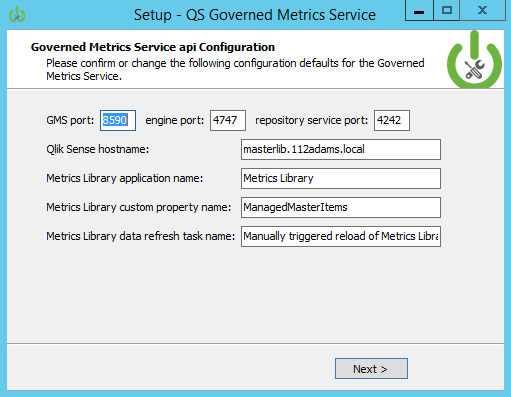
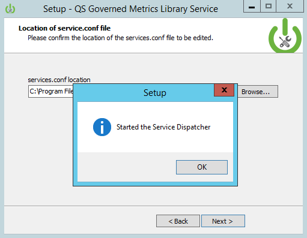

Governed Metrics Service Installation
To install the Governed Metrics Service, click on this link below.
Download Governed Metrics Service Powertool
Installation Steps

1. Double click the installation executable downloaded from github. Link

2. The Governed Metrics Service install starts and presents the Welcome screen.

3. The installer will identifiy the location where Qlik Sense is installed and create an EAPowerTools folder with the application folder inside. If the path exists dialog box appears, this is a good thing! Please click Yes to continue with the installation.

4. The Installing screen shows the progress for file installation of the Governed Metrics Service. This is the last point of the installer where it is possible to cancel the install.

6. The configuration screen for the installer allows you to set the configuration for the Governed Metrics Service REST API. This includes the following:
- GMS Port: The TCP port for the GMS REST API.
- Engine Port: The port the Qlik Engine runs on (default is 4747).
- Repository service port: The port the Qlik Repository Service API runs on (default is 4242).
- Qlik Sense hostname: The name of the Qlik Sense server the Governed Metrics Service will run. This can be a central node or a rim node.
- Metrics Library Application Name: The name of the application that stores the metrics definitions the Governed Metrics Service will read from to create Master Library entries. Enter the name of the application created during the configuration steps.
- Metrics Library Custom Property Name: The name of the custom property containing values that will be applied to applications in a Qlik Sense site that will receive metrics definitions from the Governed Metrics Service. Enter the name of the custom property created during the configuration steps.
- Metrics Library Data Refresh Task Name: The Metrics Library application (name provided above) needs a refresh task so that the Governed Metrics Service may reload the Metrics Library App when updates are made to the metrics. Enter the name of the task created during the configuration steps.

7. The services.conf file adds the installed applications to run through Qlik Sense Service Dispatcher. Confirm this path and click Next to add entries to the file.
11. The installer will stop...

12. and then start the Service Dispatcher.

13. When the installer completes, click the finish button.